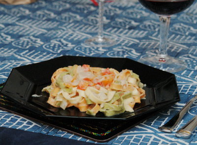

| Zutaten: | ||
| für 2 Personen: | für 4 Personen: | |
| 2 Dosen | 3 Dosen | Schwarzwurzeln (zu je 250g Abtropfgewicht, ca. 1.5dl Flüssigkeit) oder 600g frische Schwarzwurzeln |
| 1 El | 1 El | Butter |
| 1.5 dl | 3 dl | Gemüsebouillon |
| 1.5 dl | 3 dl | aufgefangene Schwarzwurzelflüssigkeit |
| 1 dl | 2 dl | Halbrahm |
| 1 | 2 | rote Peperoni |
| wenig | Muskat | |
| nach bedarf | Salz, Pfeffer | |
| 300 g | 500 g | grüne Tagliatelle |
ca. 25 Minuten
Wenn frische Schwarzwurzeln verwendet werden: Eine Schüssel mit 0.5 l Wasser füllen und 2 El Essig oder Zitronensaft hineingeben. Die Schwarzwurzeln unter fliessend Wasser gründlich abbürsten und schälen. Sofort in 5 cm lange Stücke schneiden. In wenig siedendem Salzwasser 20-30 Minuten knapp weich kochen oder im Dampfkochtop 10 Minuten. Ca. 1.5dl Kochflüssigkeit beiseite stellen.
Die (schönere) Hälfte der Schwarzwurzeln in 5 mm kleine Stücke schneiden und für die festeren Stückchen in der Sauce beiseite stellen.
Peperoni schälen, entkernen und in kleine Würfel schneiden.
Den Rest in der Butter andämpfen. Mit Bouillon und Schwarzwurzelflüssigkeit ablöschen und Hitze reduzieren. Zugedeckt 15 Minuten köcheln lassen.
Die Teigwaren zubereiten.
Mit dem Pürierstab die Sauce fein pürieren danach die 5mm Stücke Schwarzwurzeln, die Peperioniwürfel und den Rahm beigeben. Würzen.
Pro Person: 12g Fett, 13g Eiweiss, 58g Kohlenhydrate, 1668 kJ, 399 kcal
Betty Bossi Zeitung 1/03
Super! 19.1.2003 RE
Gelang gut als vegetarisches Geburtstagsessen für Herbert am 1.2.2005, RE
Gelang auch am 30.12.2008 sehr schön.
Das originale Rezept verlangte für 2 Personen 1 Dose zu ca. 400g Schwarzwurzeln. In der Migros wiegt die Dose 415g mit einem Abtropfgewicht von 250g. Ich habe das Rezept für 4 Personen zubereitet mit 3 solchen Dosen. Folglich wären es 1-2 Dosen für 2 Personen. Auch frage ich mich mit der Teigwarenmenge. Original waren das 400g Frischteigwaren. Sind die schwerer als die aus dem Beutel? Sonst gilt doch 125 g pro Person. Mit 500g für 4 Personen lag ich genau gut. Also eher 200-300 g für 2 Personen.
@LINKBACK_TAG@ @WAKELOCK@